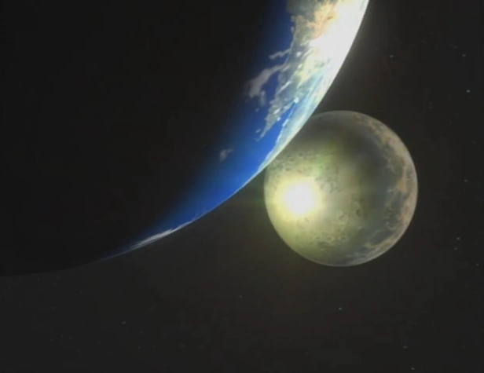

Background Story
In 2022, the accidental explosion of an experimental gate device that allows for hyperspace travel seriously damages the Moon, causing a drift of a swarm of meteorites and asteroids to bombard the surface of the planet Earth, wiping out much of the population. The survivors then abandoned the now inhospitable planet to colonize new habitable systems: Mars, Venus, the asteroid belt, and Jupiter's satellites. By 2071, the technology of the Astral Gates had stabilized and developed thriving civilizations on many of these planets, most notably Mars, the new hub of human civilization.
Politics, society, and economics changed with the times. New generations grew up with no memories of the Earth, and ethnic groups and nations gave way to planetary allegiances. As these new communities flourished, the economy boomed (similar to the economic productivity nations encountered after World War II). However, this also widened the disparity between the rich and poor, and interplanetary crime syndicates began to exert influence over the planetary governments and the Inter-Solar System Police (ISSP). In order to control the criminal activity, a "bounty-reward scheme" was introduced similar to that of the Old West. These new bounty hunters of the solar system were therefore often called "cowboys" and had a disreputable or envious reputation depending on who one talked to.
Technology of the era was a mix of old and new technologies. Individuals could own cars or space ships and freely travel the Solar System if they had the woolongs (their currency).